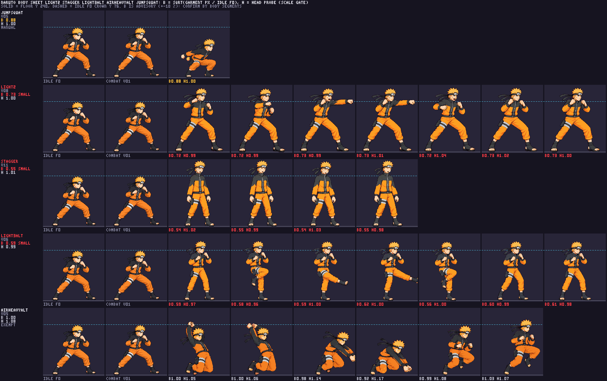
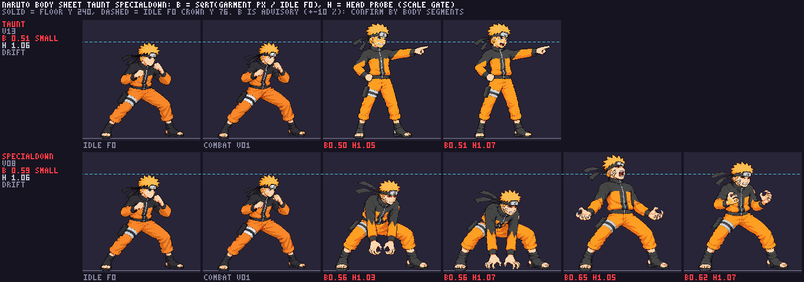
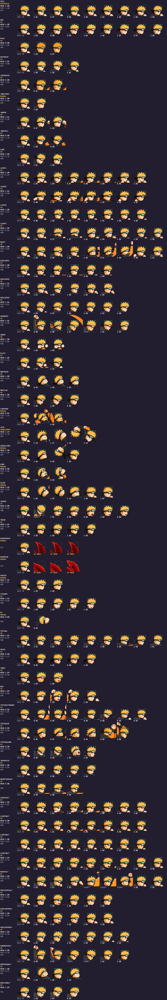

Identity
All candidates preserve Naruto's orange-and-black outfit, blond hair, headband and right-facing 3/4 sprite design. R1/R2 change only the requested trouser pixels.
Decision needed before further work. The latest candidate set is unapproved. The five redraws A4-A8 have measurable anatomy or contact holds; no image approval is being requested while those holds remain. R1/R2 are script-only pixel repairs and preserve their approved source geometry.
All candidates preserve Naruto's orange-and-black outfit, blond hair, headband and right-facing 3/4 sprite design. R1/R2 change only the requested trouser pixels.
The redraws preserve their requested frame counts and actions, but their garment-area B medians are light2 0.729, stagger 0.546, taunt 0.506, light3Alt 0.592 and specialDown 0.595 against idle. Taunt and specialDown also miss the strict head gate.
The visible candidates come from a warning-mode diagnostic atlas, not the production sheet. Strict packing stops at taunt and specialDown. Light2Alt's strike is 38 px above light2's current hit, and light3Alt's strike is 51 px below light3's hit; both exceed the 24 px contact tolerance.
Should I make one additional image-generation call for any named A4-A8 item, beyond the original three-call cap, to correct the listed body/contact holds? Please name each authorized item. A7 already has four call events if the failed tool invocation is counted, and its history is fully disclosed in the inventory. Or keep the latest A4-A8 versions unapproved on technical hold and proceed to Killua. The current images remain available below for context; a visual decision would not clear the technical holds.
Each diagnostic strip shows approved idle f0 and combat context first, followed by the candidate's packed frames from left to right. Open an image in a new tab to inspect its 256 px cells at native size.
light2 v08 TECHNICAL HOLDHead ratios 0.988-1.037; body B 0.716-0.734. The active strike height is 38 px above approved light2Alt v05, outside the 24 px tolerance. Boxes were remeasured at the fitted atlas scale; see the technical record.
stagger v11 TECHNICAL HOLDFour-frame loop retained. Head ratios 0.984-1.034, while body B is 0.536-0.551. The upright torso and legs remain far below idle volume.
taunt v13 TECHNICAL HOLDTwo-frame pointing loop retained. Head ratios 1.054-1.067 fail the strict head gate; body B is 0.503-0.510. Three generation calls used.
light3Alt v06 TECHNICAL HOLDSeven-frame sweep retained. Head ratios 0.960-1.002 pass, but body B is 0.555-0.616. The strike is 51 px below light3 v04's hit height; tolerance is 24 px.
specialDown v08 TECHNICAL HOLDFour-phase gather and roar retained. Head ratios 1.034-1.069 fail strict scale; body B is 0.560-0.653 and the feet proxy is 0.694. The old v02 probe exemption is stale and was not applied. Three generation calls used.
airHeavyAlt v05Script-only pouch recolor: 2,253 masked pixels changed; all remaining RGBA pixels match approved v04. This inherits v04 geometry evidence and is not a new anatomy certification.
jumpSquat v05Script-only cleanup made three orange pixels beside the rear fist transparent; all other RGBA pixels match approved v04. Head ratio is 1.000 and body B is 0.882, an advisory pose-sensitive value.
B measures opaque garment-color area against packed idle f0. It is advisory and pose-sensitive; the large shortfalls in the upright poses above are visible in the same-scale comparison. H is the packer's head probe, including hair.



| Frame | Packed cell | Hit box [x,y,w,h] | Hand point |
|---|---|---|---|
| f2 | 39 | [195,65,28,23] | None defined |
| f3 | 40 | [190,67,30,23] | None defined |
The hitbox sidecar records _scale: 1.1403, the measured auto-head fit with packScale 1. No reach extension was added.
Source hashes, call history and scripted pixel diffs are recorded in the committed generation inventory. Detailed scale/contact evidence is in art/scale/size-r8/NARUTO_A4_A8_R1_R2.md. The normal strict pack does not write a production atlas for these candidates.